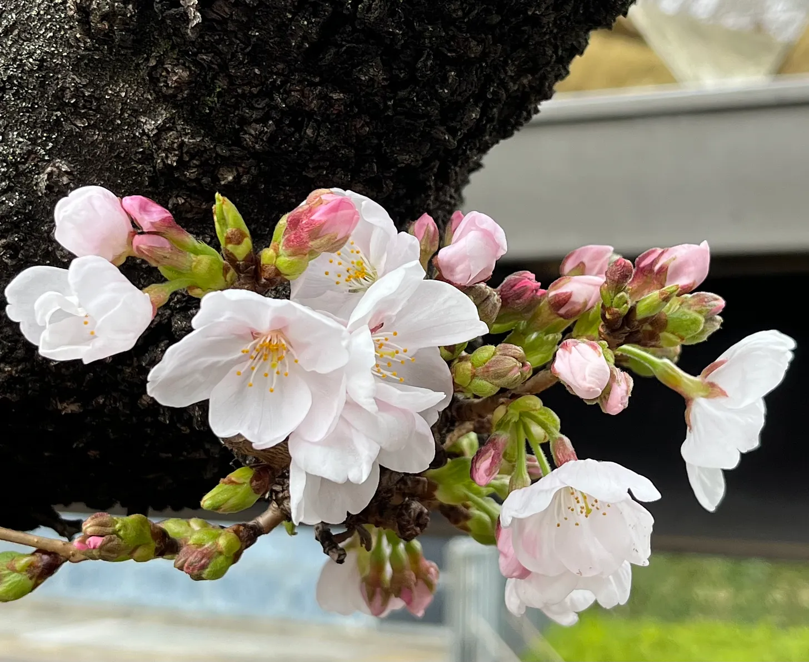

Cherry blossoms are a symbol of Japanese spring, beloved for their ephemeral beauty. Japanese look forward eagerly to the flowering of the cherries, to the point that the nightly news carries detailed forecasts of the blossom’s steady spread across the islands of Japan, from warmer southwestern climates to the cooler northeast, right alongside the daily weather forecasts. They call the march of flowers the sakura zensen: “the cherry blossom front.”
The official watchers use a specific species of cherry for their observations, known as the somei yoshino. It is the most commonly encountered type of cherry tree in Japan, to the point that when people think of sakura in my country, they’re almost certainly envisioning somei yoshino blossoms.
I was born and raised in Japan, and have spent most of my life here, so I’ve been through more cherry-blossom cycles than I sometimes care to remember. But even still, I only recently learned about the “600 degree rule.” It defines how the somei yoshino emerge from their winter dormancy to blossom every Spring.
It’s simple. You start calculating on February 1st, adding together the high temperatures of every day thereafter. When the total reaches 600 degrees Celsius, they say, the somei yoshino will begin blooming.
In Tokyo, the blossoming of the somei yoshino is traditionally associated with the month of April. But this year, they began to bloom on March 28th. In fact, the cherries have been blooming significantly earlier in recent years as compared to the 20th century and earlier. The reason is simple: rising temperatures due to climate change.
 A little happiness I found on March 28th!The blooming of the cherries is linked to all sorts of traditions in Japan. Those little flowers have long been seen as a symbol of new beginnings. This is because a great many things typically begin here in April. School years start. New recruits begin working. And for their companies, the fiscal year begins.
When I was a schoolgirl, my combined junior-senior high school in Tokyo had a grand old somei yoshino standing in the schoolyard. There was a tradition of taking class pictures beneath it on the first day of school. Teachers would set up stands under its boughs, and each class would take their turn on them for a commemorative photo. Some years, the tree would only be in half bloom. Others, it might have been full mankai. But the tree inevitably had at least some flowers on its branches.
That isn’t inevitable anymore. Warmer temperatures on average mean the trees awaken from their winter dormancy significantly earlier, making early bloomings the “new normal.” Even as we continue to see the sakura as a symbol of beginnings, in some places somei yoshino have started to bloom so early that they are becoming associated with graduations, which typically happen in mid-March. It’s a strange thing to see for older generations of Japanese people who remember the sakura as a symbol of April.
If things continue like this, it is entirely possible that sakura will continue to bloom even earlier. Will a day come when they bloom in February? I hope not. It would be a sign of something gone terribly wrong with the ecosystem.
But as for the moment, I put dark thoughts like that out of my head. The neighborhood somei yoshino are approaching full bloom, the pink and white puffs filling out the branches like fluffy popcorn, countless little flowers cheering on new starters – including me! I am excited to launch my newsletter, and grateful that it can be during such a beautiful April. In issues to come, I want to profile and contextualize aspects of Japanese culture in a fun and engaging way for English readers. I hope you will find it useful. In the meantime, nice meeting you! And thanks for reading.